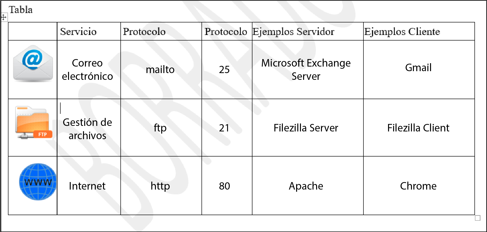

Ejercicio 4: Cuestionario
En este ejercicio hemos tenido que responder a las siguientes cuestiones:
- ¿Qué es el motor de renderizado de un navegador? Pon ejemplos.
- Un motor de renderizado es software que toma contenido marcado (como HTML, XML, archivos de imágenes, etc.) e información de formateo (como CSS, XSL, etc.) y luego muestra el contenido ya formateado en la pantalla de aplicaciones.d
- Indica la manera de acceder a la consola de depuración de diferentes navegadores.
- Chrome: Presiona Ctrl + Mayús + J (Windows o Linux) o Cmd + Opt + J (Mac).
- Mozilla: Desde el teclado: pulse Ctrl+Shift+J (o Cmd+Shift+J en un Mac).
- Diferencias entre W3C y WHATWG
- W3C: El Consorcio World Wide Web (W3C) formado en 1994, según su página 'About W3C', es la comunidad donde las organizaciones, los desarrolladores y el público en general trabajan en conjunto desarrollando recomendaciones y estándares que aseguran el crecimiento de la World Wide Web a largo plazo.
- WHATWG: El Web Hypertext Application Technology Working Group (WHATWG) es un consorcio formado en 2004. Constituido a raíz de un desacuerdo en un meeting del W3C, después que se anunciara la decisión de pasar a centrarse en XHTML como evolución de HTML. Desde entonces parece que tenemos dos rivales luchando por la estandarización web: WHATWG y W3C.
- Muestra con ejemplos algunas diferencias entre HTML y XHTML
- HTML y XHTML son las dos variantes que existen en el lenguaje HTML 5. Las diferencias entre esas dos variantes son básicamente sintácticas: la sintaxis HTML está inspirada en la norma SGML (aunque no la cumple estrictamente), mientras que la sintaxis XHTML está basada en la recomendación XML.
Básicamente, XHTML es más estricto que HTML y eso lo refleja en casos como este:
- En XHTML no puede haber texto no incluido en alguna etiqueta, pero en HTML puede haberlo.
- En XHTML, los nombres de elementos y atributos deben escribirse en minúsculas. En HTML no es necesario.
- En XHTML, las referencias a entidades en hexadecimal deben escribirse en minúsculas. En HTML se pueden escribir en minúsculas o mayúsculas.
- Para evitar problemas con los caracteres "<" y "&", en XHTML el código javascript (y de estilo) se suele incluir en secciones CDATA. En HTML no es necesario.
- Hemos completado la siguiente tabla:
